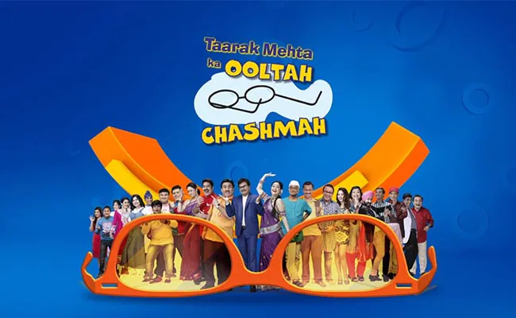

|  |
This story is set in Gokuldham, Mumbai, where people from different places, cultures and traditions live happily with each other. The serial emphasizes on humanity and innocent comedy. Jethalal Champaklal Gada ( Dilip Joshi ) is a businessman (electronic showroom) who wakes up very late in the morning and loves Jalebi Fafda. But everyone disturbs it, son Tapu and wife Daya in the house and sometimes brother-in-law Sundar. Apart from this, sometimes it has to be disturbed even in the shop. His wife Daya Jethalal Gada ( Disha Vakani)) Mainly starts doing garba anytime. Tappu always thinks of doing mischief and keeps on torturing his teacher, Atmaram Tukaram Bhide (who is the executive secretary of Gokuldham Society). Many times he has broken the window glass of Bhide's house with cricket ball. Atmaram Bhide teaches children and manages to save a lot. Jethalal's Bapuji Champak Lal Jayantilal Khimji Gada is always angry at Jethalal, and talks about wisdom. Everyone in the society respects Bapuji a lot. Bapuji also does a strange dance. Popatlal is a journalist who always carries his umbrella and is worried about his marriage. Apart from this, Tarak Mehta is Jethalal's best friend, is a writer and always saves him from troubles. Dr. Hansraj Hathi always likes to eat something or the other. He is never able to control his food, due to which he becomes fat but he gets failure on every attempt to reduce obesity. Nattu Kaka and Bagha live in Jethalal's shop. Nattu Kaka always asks Jethalal to increase his salary. But he is a very honest and dedicated person towards his work. Bagha is his nephew and an electronics technician working in Gada Electronics. Bagha is engaged to Bawri. Sometimes Madan is also seen in Gada electronics.